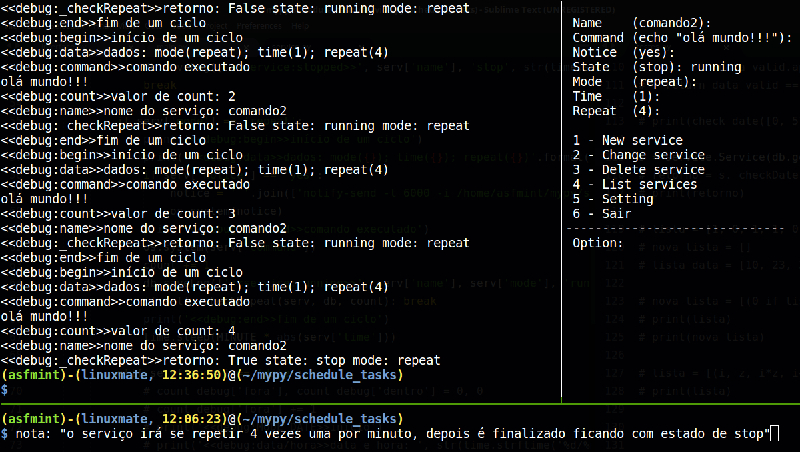
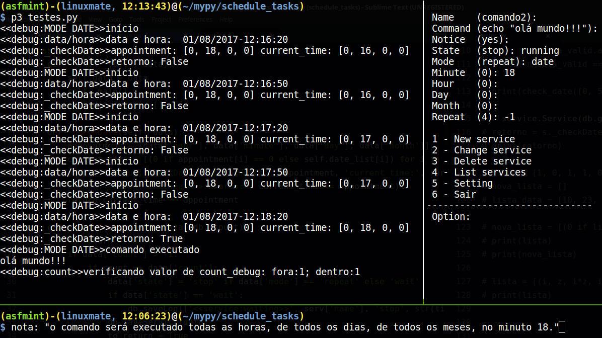
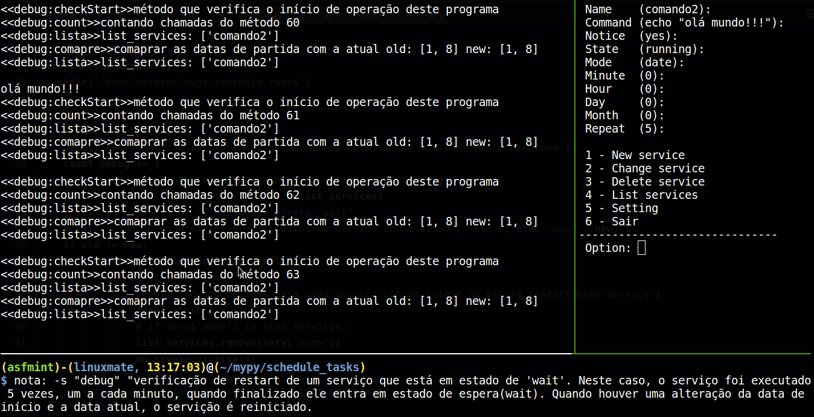
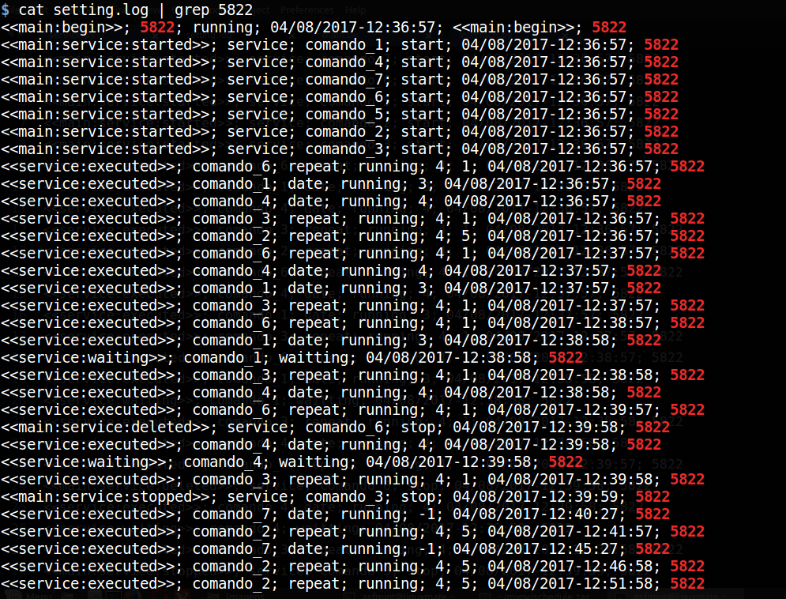

Terceira etapa - Depuração
Um pouco de depuração
A depuração é uma das partes essenciais na criação de um programa. Embora, eu realize testes continuamente no desenvolvimento de cada parte do programa, chega um momento que é preciso depurar todas as partes juntas.
A imagem abaixo mostra a execução de um serviço. O serviço foi criado em modo de repetição, definido um tempo de intervalo de 1 minuto para ele ser executado, repetindo-se 4 vezes e então é alterado o seu estado para "stop".
Nesta outra imagem que segue abaixo, temos um novo serviço que foi alterado e agora está em modo "date", para ele foi definido que o comando seria executado infinitamente aos 18 minutos de todas as horas.
A próxima imagem mostra que o serviço está em estado "date", programado para executar seu comando em todos os minutos, de todas as horas. Verifique que foi definido um número máximo de repetições para esse serviço. Quando ele atingir 5 execuções ele mudará seu 'State" de "running" para "wait", e ficará em estado de espera, que só voltará a se repetir se o programa for novalmente executado ou se houver mudança da data da qual ele iniciou sua execução.
Por fim, temos abaixo uma imagem que mostra as ações dos serviços, desde seu início, até suas execuções, paradas, esperas etc.
Note que é possível verificar a exclusão de um serviço que foi removido porque tinha sido definido em "Delete" o valor "yes" ao qual apaga o arquivo após ele cumprir o ciclo a que ele foi determinado.
